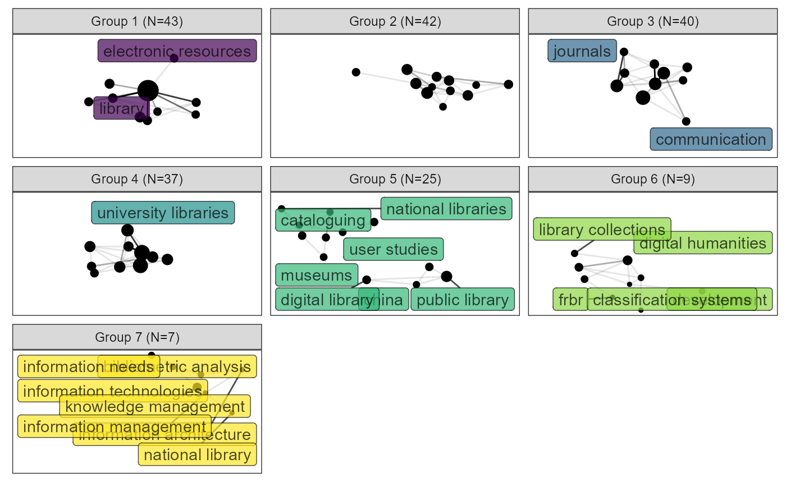
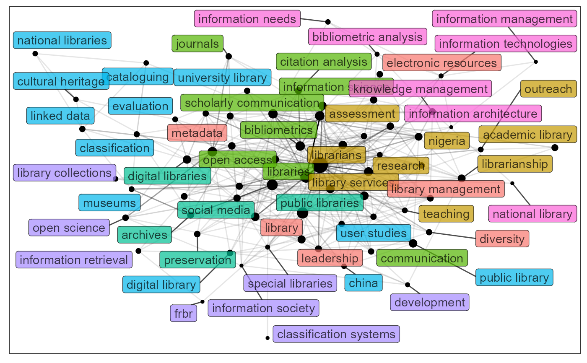
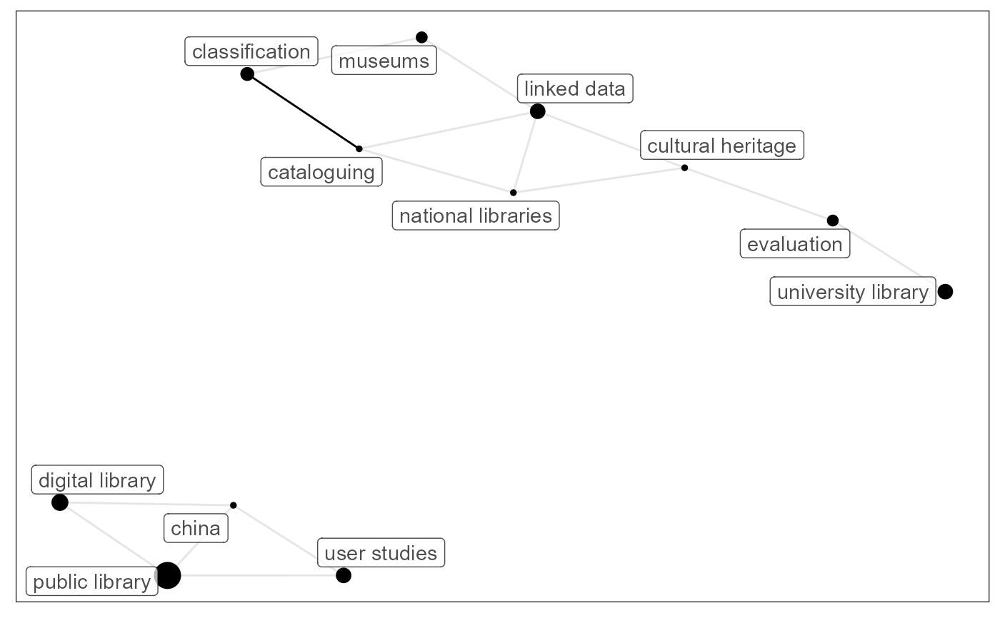

R/keyword_network.R
keyword_network.RdProviding flexible visualization of keyword_vis. The
group size would be showed, and user could extract specific group to visualize.
keyword_network(
tibble_graph,
group_no = NULL,
facet = TRUE,
max_nodes = 10,
alpha = 0.7
)A tbl_graph output by keyword_group.
If one wants to visualize a specific group, gives the group number.
Default uses NULL,which returns all the groups.
Whether the figure should use facet or not.
The maximum number of nodes displayed in each group.
The transparency of label. Must lie between 0 and 1. Default uses 0.7.
An object yielded by ggraph
If the group_no is not specified, when facet == TRUE,
the function returns a faceted figure with limited number of nodes
(adjuseted by max_nodes parameter). The "N=" shows the total size of the group.
When facet == FALSE,all the nodes would be displayed in one
network.Colors are used to specify the groups, the size of nodes is proportional to the keyword frequency,
while the alpha of edges is proportional to the co-occurrence relationship between keywords.
If the group_no is specified, returns the network visualization of the group.
If you want to display all the nodes, set max_nodes to Inf.
library(akc)
# \donttest{
bibli_data_table %>%
keyword_clean(id = "id",keyword = "keyword") %>%
keyword_group(id = "id",keyword = "keyword") %>%
keyword_network()
#> Joining with `by = join_by(name, freq, group)`
#> Warning: ggrepel: 4 unlabeled data points (too many overlaps). Consider increasing max.overlaps
#> Warning: ggrepel: 5 unlabeled data points (too many overlaps). Consider increasing max.overlaps
#> Warning: ggrepel: 10 unlabeled data points (too many overlaps). Consider increasing max.overlaps
#> Warning: ggrepel: 3 unlabeled data points (too many overlaps). Consider increasing max.overlaps
# use color with `scale_fill_`
bibli_data_table %>%
keyword_clean(id = "id",keyword = "keyword") %>%
keyword_group(id = "id",keyword = "keyword") %>%
keyword_network() + ggplot2::scale_fill_viridis_d()
#> Joining with `by = join_by(name, freq, group)`
#> Warning: ggrepel: 4 unlabeled data points (too many overlaps). Consider increasing max.overlaps
#> Warning: ggrepel: 5 unlabeled data points (too many overlaps). Consider increasing max.overlaps
#> Warning: ggrepel: 10 unlabeled data points (too many overlaps). Consider increasing max.overlaps
#> Warning: ggrepel: 3 unlabeled data points (too many overlaps). Consider increasing max.overlaps

# without facet
bibli_data_table %>%
keyword_clean(id = "id",keyword = "keyword") %>%
keyword_group(id = "id",keyword = "keyword") %>%
keyword_network(facet = FALSE)
#> Joining with `by = join_by(name, freq, group)`
#> Warning: ggrepel: 1 unlabeled data points (too many overlaps). Consider increasing max.overlaps

# get Group 5
bibli_data_table %>%
keyword_clean(id = "id",keyword = "keyword") %>%
keyword_group(id = "id",keyword = "keyword") %>%
keyword_network(group_no = 5)

# }